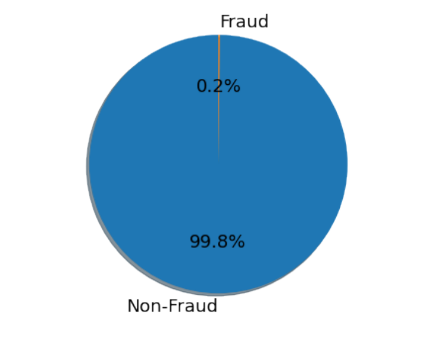

Machine learning project
Predicting Fraudulent Transactions
A machine-learning project that analyzes transaction data to identify potentially fraudulent activity, with emphasis on data preparation, class balance, and model evaluation.

Project overview
The goal was to build and compare fraud-detection models using transaction patterns. Data cleaning, preprocessing, and sampling strategies were considered to improve training quality and model generalization.
Key features
- Explored and prepared transaction data for fraud analysis.
- Applied sampling methods to address class imbalance.
- Cleaned and preprocessed data to reduce noise and improve generalization.
- Compared Decision Tree, Logistic Regression, and Neural Network models.
- Evaluated model performance to inform algorithm selection.
Technology stack
Python
Machine learning
Data preprocessing
Decision Tree
Logistic Regression
Neural Network
Model evaluation